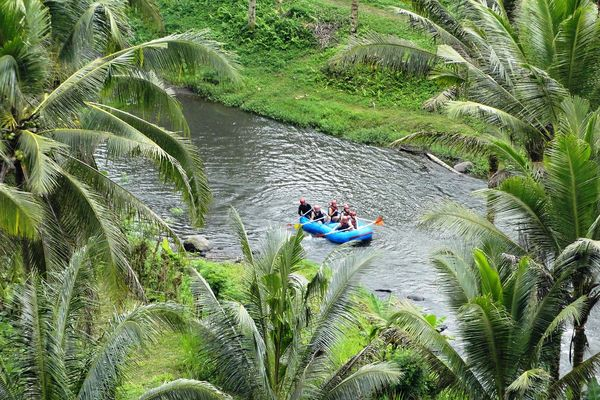
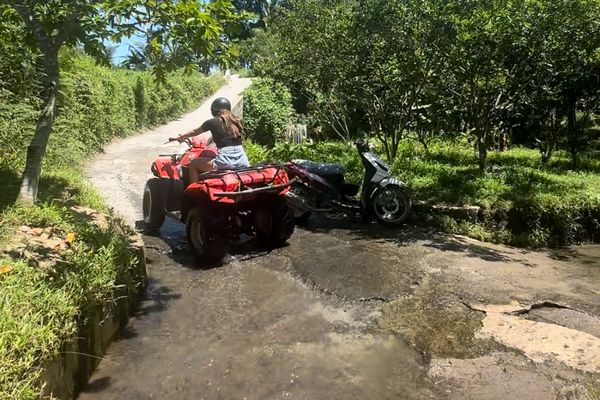
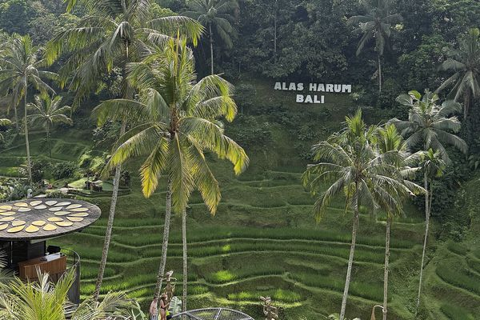
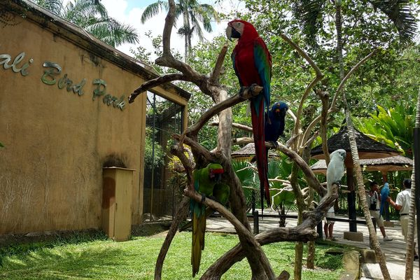
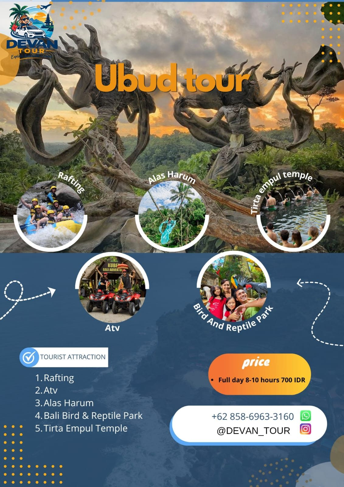

⏱ Seharian
⏱ Seharian
Tur Kintamani
Desa kerajinan, pura air suci Tirta Empul, kebun kopi, dan panorama Gunung serta Danau Batur.
Harga segera hadirDETAIL

⏱ Full day (8–10 jam)
Satu hari penuh petualangan dan budaya di sekitar Ubud: memacu adrenalin di arus sungai dan jalur ATV, berayun di atas hutan kelapa dan sawah Alas Harum, bertemu burung dan reptil di Bali Bird & Reptile Park, lalu menutup hari dengan suasana sakral Pura Tirta Empul.

Arung jeram di Sungai Ayung, sungai terpanjang di Bali yang membelah lembah hijau di kawasan Ubud. Dengan perahu karet, helm, dan pemandu berpengalaman, Anda mengarungi jeram seru sambil menikmati tebing berlumut, hutan tropis, dan air terjun kecil di sepanjang aliran.

Kendarai ATV (motor roda empat) melewati jalan tanah, genangan lumpur, sawah, dan perkebunan desa. Cocok untuk pemula — Anda mendapat pengarahan dan perlengkapan keselamatan sebelum berangkat. Siap-siap pulang dengan baju penuh lumpur dan senyum lebar!

Alas Harum di Tegallalang adalah agrowisata dengan pemandangan sawah terasering dan hutan kelapa. Coba ayunan tinggi yang terkenal untuk foto melayang di atas lembah, jelajahi spot foto unik, dan cicipi kopi serta teh hasil kebun Bali.

Taman satwa di kawasan Singapadu, Gianyar, dengan aneka burung tropis berwarna-warni — seperti burung kakatua, makaw, dan jalak Bali yang langka — serta koleksi reptil. Pengalaman menyenangkan dan edukatif, cocok untuk keluarga dan anak-anak.

Pura air suci di Tampaksiring yang dibangun di sekitar mata air alami. Umat Hindu Bali datang untuk melukat — ritual penyucian diri di bawah pancuran air suci. Pengunjung boleh ikut dengan berpakaian sopan dan memakai kain (kamen) serta selendang.
Urutan dapat menyesuaikan kondisi lalu lintas dan cuaca.

⏱ Seharian
Desa kerajinan, pura air suci Tirta Empul, kebun kopi, dan panorama Gunung serta Danau Batur.
 ⏱ Setengah hari (siang–malam)
⏱ Setengah hari (siang–malam)
Pantai, patung ikonik, dan Tari Kecak di tebing Uluwatu saat senja.
 ⏱ Seharian
⏱ Seharian
Tebing dan pantai ikonik di sisi barat Nusa Penida, dengan kapal cepat dari Sanur.